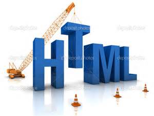

Maquetación

Florentino Alvídrez
La correcta creación de la estructura HTML, es sin duda la base de la maquetación web, a convertir un PSD a HTML. Es fundamental que este proceso esté correctamente realizado.
Florentino Alvídrez
La correcta creación de la estructura HTML, es sin duda la base de la maquetación web, a convertir un PSD a HTML. Es fundamental que este proceso esté correctamente realizado.
El HTML (Hyper Text Markup Language) es un lenguaje que sirve para escribir hipertexto, es decir, documentos de texto presentado de forma estructurada, con enlaces (links) que conducen a otros documentos o a otras fuentes de información (por ejemplo bases de datos) que pueden estar en tu propia máquina o en máquinas remotas de la red. Todo ello se puede presentar acompañado de cuantos gráficos estáticos o animados y sonidos seamos capaces de imaginar.
Mucha gente asocia este lenguaje (que en realidad casi ni siquiera es un lenguaje, sino una forma de definir efectos en el texto de manera similar a como se hacía en los antiguos procesadores de texto para DOS;) con complicados y poderosos servidores de información que misteriosamente alguien programa, y que seguramente es un genio en estas cuestiones, y piensa que en el trabajo cotidiano o incluso en casa, esto no sirve para nada, pues no es así
Esto es muy sencillo y más práctico de lo que parece. Evidentemente, si lo que quieres es montar un servidor de información con miles de páginas, links a varias bases de datos tanto locales como remotas, posibilidad de búsquedas indexadas, gráficos animados, sonido, páginas interactivas, etc., etc., necesitarás saber algo más que simple HTML.